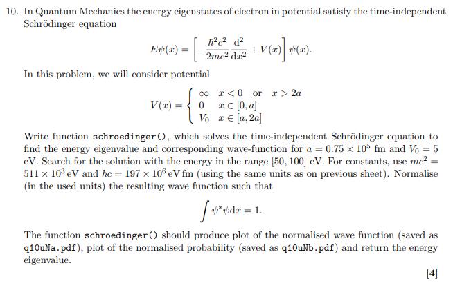
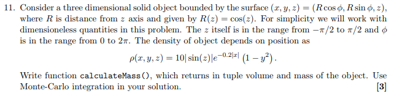
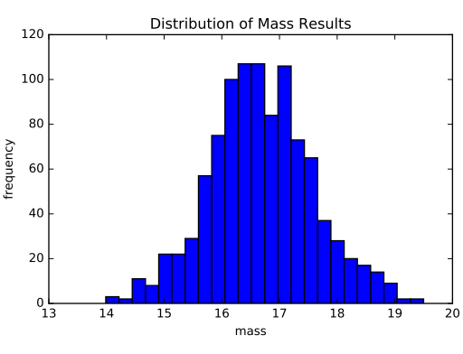
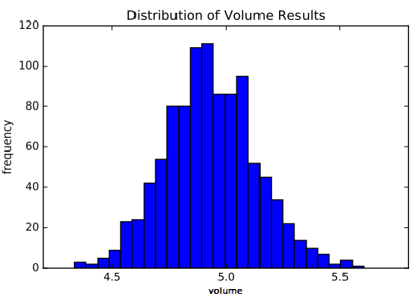
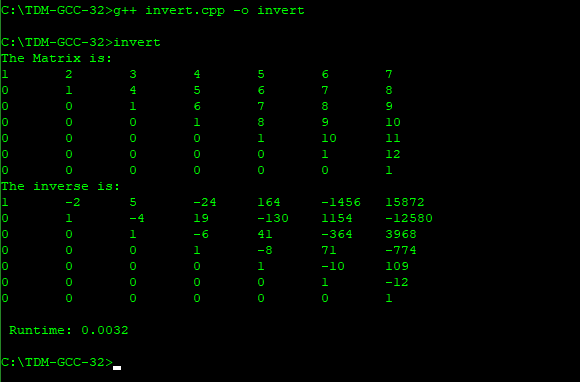
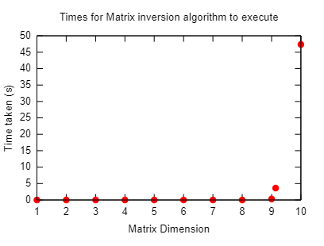
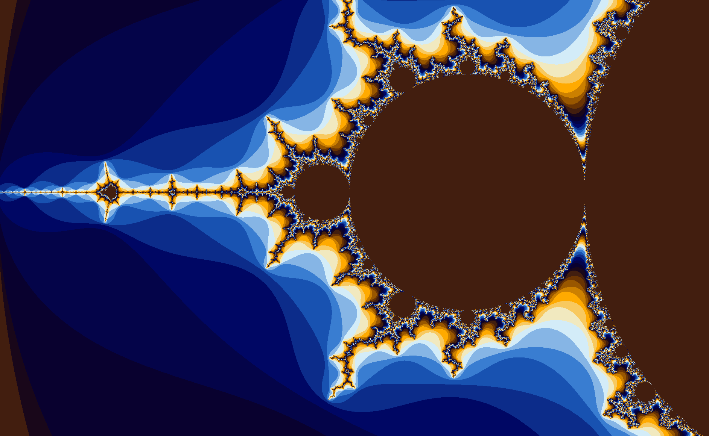
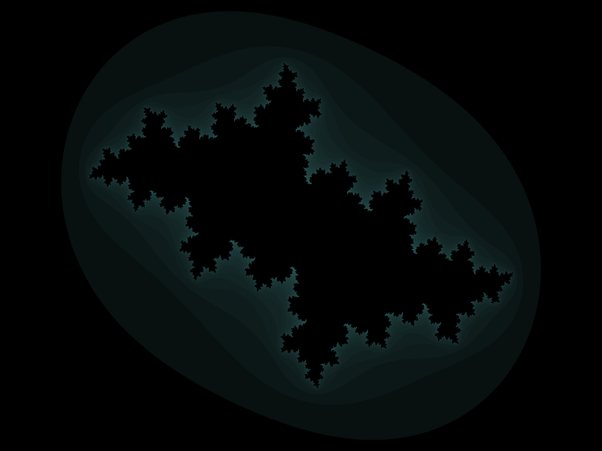

Scientific Computing
This page shows my solutions to scientific computing problems that I found interesting at the time.
The Problem:
The Code:
# -*- coding: utf-8 -*- """ Created on Mon Jan 01 21:08:11 2018 @author: Ramin Tawab """ from scipy.integrate import odeint from scipy.optimize import brentq from numpy import linspace, trapz from matplotlib import pyplot as plt a = 0.75e5 # fm X = linspace(0, 2 * a, 1000) # x coordinates s.t. 0 < x < 2a def potential(x): "potential function, V(x) s.t. 0 < x < 2a" V0 = 5 # eV # quick implementation. Infinities are accounted for by rest of program. return ((x >= a) and (x <= 2 * a)) * V0 def solve_psi(energy): "solve differential equation numerically for Psi" # TISE Constant 2m / hbarSquared con = 2 * 511e3 / 197e6 ** 2 # Psi(x = 0) in form [psi(0), dpsi(0)] s.t. psi(0) = 0 satisfies boundary psi = [0, 1] # Differentiate [psi(x), dpsi(x)] -> [dpsi(x), ddpsi(x)] per TISE dif = lambda psi, x: [psi[1], con * (potential(x) - energy) * psi[0]] # solve for psi return odeint(dif, psi, X) def schroedinger(): "plot normalised wave function and probability, return TISE eigenvalue" # find energy eigenvalue in range(50,100) to satisfy boundary condition eigenval = brentq(lambda e: solve_psi(e)[-1][0], 50, 100) # find wave function at eigenvalue energy Psi = [e[0] for e in solve_psi(eigenval)] # determine area under probability curve for normalisation Norm = trapz([e**2 for e in Psi], X) # plot normalised wave function plt.figure() plt.plot(X, [e / Norm **.5 for e in Psi]) plt.title(r'Normalised wave function $\Psi(x)$') plt.xlabel(r'x / fm') plt.ylabel(r'$\Psi(x)$ / fm$^{-1}$', {'horizontalalignment' : 'right', 'verticalalignment': 'center'}) plt.savefig('q10u1608865a.pdf') # plot normalised probability curve plt.figure() plt.plot(X, [e**2 / Norm for e in Psi]) plt.title(r'Probability distribution $|\Psi(x)|^{2}$') plt.xlabel(r'x / fm') plt.ylabel(r'$|\Psi(x)|^{2}$') plt.savefig('q10u1608865b.pdf') # return energy eigenvalue return eigenval print(schroedinger())
The Solution:
The program returns an eigenvalue of 69.19849586362103 eV
Other students were unable to solve this because it is a boundary value problem with two unknown variables. This would be impossible to solve in the conventional analytical way. The numerical method proves to be elegant.
The Problem:
The Code:
# -*- coding: utf-8 -*- """ Created on Tue Jan 02 22:59:36 2018 @author: Ramin Tawab """ from mpl_toolkits.mplot3d import Axes3D from matplotlib import pyplot as plt, cm as cm import numpy as np from math import cos, sin, exp, pi from random import random cmap = cm.get_cmap('Spectral') # function to convert number to color def calculateMass(): "calculate mass" fig = plt.figure() ax = fig.add_subplot(111, projection='3d') # density function of shape rho = lambda x, y, z: 10 * abs(sin(z)) * exp(-0.2 * abs(x)) * (1 - y**2) # random x s.t. -1 < x < 1 rnd = lambda: 2 * random() - 1 # Volume of region containing shape (cuboid) Volume = 2 * 2 * pi # number of points in simulation trials = int(1e4) # number of points in shape trials_in = 0 # sum of density of points in shape rho_count = 0 for i in range(trials): # random coordinate in region x, y, z = rnd(), rnd(), rnd() * pi / 2.0 # test if coordinate in shape if x ** 2 + y ** 2 <= cos(z) ** 2: trials_in += 1 density = rho(x, y, z) rho_count += density # plot the point coloured by its density ax.scatter(x, y, z, facecolors = cmap(density / 10.0), marker='o') # compute volume of shape volume = Volume * trials_in / trials # compute mass of shape mass = volume * rho_count / trials_in plt.savefig('plot.pdf') return volume, mass print(calculateMass())
The Solution:

The program found a Volume of 4.904654450784385 units3 and a Mass of 16.340361663860914 units. We can find the distribution of the mass and volume by repeating the monte carlo simulation 1000 times and plotting the results on a histogram.
 Although very simple to program, I found this question enjoyable because of the versatility of the monte carlo simulation which I have had run ins with before.
The Problem:
Investigate the runtime of a program that implements Matrix inversion recursively.
The Code:
// Title: Matrix Inversion // Author: Ramin Tawab #include<bits/stdc++.h> using namespace std; #include <boost/timer.hpp> #define N 7 // change this variable to get different matrix sizes void cofactor(int mat[N][N], int data[N][N], int m, int n, int _N) { int i = 0, j = 0; for (int row = 0; row < _N; row++) { for (int col = 0; col < _N; col++) { if (row != m && col != n) { data[i][j++] = mat[row][col]; if (j == _N - 1) { j = 0; i++; } } } } } int determinant(int mat[N][N], int _N) { if (_N == 1) return mat[0][0]; int sign = 1, det = 0, data[N][N]; for (int f = 0; f < _N; f++) { cofactor(mat, data, 0, f, _N); det += sign * mat[0][f] * determinant(data, _N - 1); sign = -sign; } return det; } void adjoint(int mat[N][N], int adj[N][N]) { if (N == 1) { adj[0][0] = 1; return; } int sgn = 1, data[N][N]; for (int i = 0; i < N; i++) { for (int j = 0; j < N; j++) { cofactor(mat, data, i, j, N); if((i + j) % 2 == 0) { sgn = 1; } else { sgn = -1; } adj[j][i] = sgn * determinant(data, N-1); } } } bool inverse(int mat[N][N], float inverse[N][N]) { int det = determinant(mat, N); if (det == 0) return false; // singular matrix int adj[N][N]; adjoint(mat, adj); for (int i=0; i<N; i++) for (int j=0; j<N; j++) inverse[i][j] = adj[i][j]/float(det); return true; } int main() { int A[N][N]; for (int i = 0; i < N; i++) { for(int j = 0; j < N; j++) { if(i < j) { A[i][j] = i + j + 1; } else if(i == j) { A[i][j] = 1; } else { A[i][j] = 0; } } } cout << "The Matrix is:\n"; for(int i = 0; i < N; i++) { for(int j = 0; j < N; j++) { cout << A[i][j]; cout << "\t"; } cout << endl; } float sumtime = 0; float inv[N][N]; // take average runtime of many trial runs for (int i = 0; i < 10; i++) { boost::timer t; inverse(A, inv); sumtime += t.elapsed(); } cout << "The inverse is:\n"; for(int i = 0; i < N; i++) { for(int j = 0; j < N; j++) { cout << inv[i][j]; cout << "\t"; } cout << endl; } cout << endl; cout << " Runtime: "; cout << sumtime / 10.0; cout << endl; return 0; }
The Solution:
Example output from the program:
The results of the program for different values of N, the size of the matrix, were plotted using the C++ libary gnuplot:
A recursive solution to matrix inversion via the method of cofactors is computationally inefficient for large matrices. Methods such as Gaussian Elimination and LU decomposition are preferred.
The Problem:
Draw the mandelbrot set through iteration
The Code:
// Complex.java public class Complex { private double real, imag; public Complex() { real = 0.0; imag = 0.0; } public Complex(double real, double imag) { this.real = real; this.imag = imag; } public void add(Complex complex_number) { this.real = this.real + complex_number.real; this.imag = this.imag + complex_number.imag; } public double mod() { return Math.sqrt(Math.pow(this.real, 2) + Math.pow(this.imag, 2)); } public Complex square() { double Real = this.real*this.real - this.imag*this.imag; double Imag = 2*this.real*this.imag; return new Complex(Real, Imag); } }
// Mandelbrot.java import java.io.IOException; import java.io.BufferedReader; import java.io.File; import java.io.InputStreamReader; import javax.imageio.ImageIO; import java.awt.Color; import java.awt.image.BufferedImage; import static java.lang.System.out; public class Mandelbrot { public static void main(String args[]) throws IOException { double width = 5000; double height = width * 0.75; BufferedImage img = new BufferedImage((int)width, (int)height,BufferedImage.TYPE_3BYTE_BGR); BufferedReader reader = new BufferedReader(new InputStreamReader(System.in)); int max_iter = 256; for(int x = 0; x < width; x++) { for(int y = 0; y < height; y++) { Complex c = new Complex(2.0 * (x-width/2)/(width/2), 2.0*(y-height/2)/(width/2)); Complex z = new Complex(0,0); int i; for(i=0;i<max_iter; i++) { z = z.square(); z.add(c); if(z.mod() > 2) break; } Color color; switch (i % 16) { case 0: color = new Color(66, 30, 15); break; case 1: color = new Color(25, 7, 26); break; case 2: color = new Color(9, 1, 47); break; case 3: color = new Color(4, 4, 73); break; case 4: color = new Color(0, 7, 100); break; case 5: color = new Color(12, 44, 138); break; case 6: color = new Color(24, 82, 177); break; case 7: color = new Color(57, 125, 209); break; case 8: color = new Color(134, 181, 229); break; case 9: color = new Color(211, 236, 248); break; case 10: color = new Color(241, 233, 191); break; case 11: color = new Color(248, 201, 95); break; case 12: color = new Color(255, 170, 0); break; case 13: color = new Color(204, 128, 0); break; case 14: color = new Color(153, 87, 0); break; case 15: color = new Color(106, 52, 3); break; default: color = new Color(106, 52, 3); break; } img.setRGB(x,y,color.getRGB()); } } ImageIO.write(img,"PNG", new File("mandelbrot.png")); } }
The Solution:
The program produces an image of the mandelbrot set
The code is easily modified to produce images of general Julia Sets:
